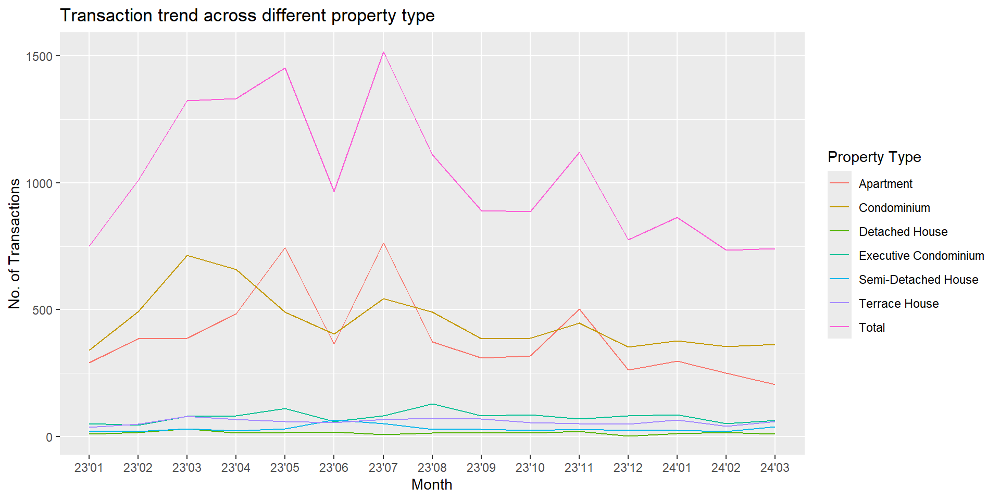
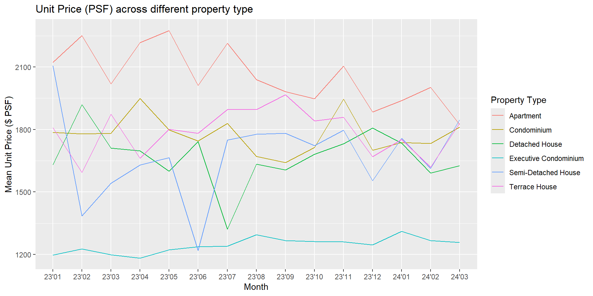
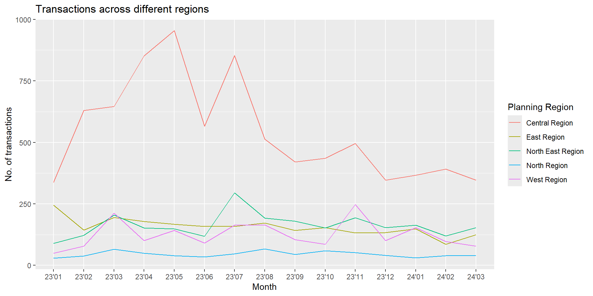

Our dataset contains transaction records for both public and private residential properties from January 1, 2023, to March 31, 2024. The task is to provide insights into the private residential market and its sub-markets in Singapore for the first quarter of 2024, with the help of visualization to describe and discuss the trends.
Pre-processing
Importing libraries:
library(readr)library(tidyverse)
── Attaching core tidyverse packages ──────────────────────── tidyverse 2.0.0 ──
✔ dplyr 1.1.4 ✔ purrr 1.0.2
✔ forcats 1.0.0 ✔ stringr 1.5.1
✔ ggplot2 3.5.0 ✔ tibble 3.2.1
✔ lubridate 1.9.3 ✔ tidyr 1.3.1
── Conflicts ────────────────────────────────────────── tidyverse_conflicts() ──
✖ dplyr::filter() masks stats::filter()
✖ dplyr::lag() masks stats::lag()
ℹ Use the conflicted package (<http://conflicted.r-lib.org/>) to force all conflicts to become errors
Merge the datasets (5 csv) into 1 dataframe:
options(readr.show_col_types =FALSE)options(warn=-1)#merge all the CSV files (5 in total) into one dataframedf <-list.files(path='./data/Take-home_Ex01/data', full.names =TRUE) %>%lapply(read_csv) %>% bind_rows
unique(df$`Purchaser Address Indicator`)
[1] "HDB" "Private" "N.A"
As shown above, there are 3 types in Purchaser Address Indicator. Since we only concern about private residential market, transcation records for ‘HDB’ and ‘N.A.’ will be removed.
ggplot(df_tran, aes(x=`month`, y=`transactions`, group=`Property Type`, color=`Property Type`)) +geom_line() +ggtitle("Transaction trend across different property type")+xlab("Month")+ylab("No. of Transactions")

From the graph, the transaction numbers for detached house, executive condominium, semi-detached house and terrace house are rather consistent, and relatively small compared to the apartment and condo. Although the transaction number for both apartment and condo are high, the condo changes smoother across time compared to apartment. The fluctuations in the total transaction number are mainly due to apartment. Since July 2023, the general trend for the private residential market is shrinking. For the 2024 Q1, transaction numbers reaches the lowest point across the last year.
`summarise()` has grouped output by 'month'. You can override using the
`.groups` argument.
ggplot(df_unit_price, aes(x=`month`, y=`Unit Price ($ PSF)`, group=`Property Type`, color=`Property Type`)) +geom_line() +ggtitle("Unit Price (PSF) across different property type")+xlab("Month")+ylab("Mean Unit Price ($ PSF)")

For condo, detached house, semi-detached house and terrace house, the unit price fluctuates a lot during the year, but at the year end, the unit prices eventually changes back around the beginning of the year. For apartment’s unit price, the general trend is decreasing with some fluctuations. For the executive condo, the unit price changes is usually very minor compared to the rest, but consistently increases. For the 2024 Q1, it’s unit price drop a little bit.
Visualization 3
Transactions across different areas (East, North east, central, north, west)
`summarise()` has grouped output by 'month'. You can override using the
`.groups` argument.
ggplot(df_tran_area, aes(x=`month`, y=`transactions`, group=`Planning Region`, color=`Planning Region`)) +geom_line() +ggtitle("Transactions across different regions")+xlab("Month")+ylab("No. of transactions")

The transactions for east, north east, north and west regions are rather consistent across the year. The transactions for the central region increased significantly since the start of 2023, fluctuates from 2023 April to Augest, and then slowly decreased all the way until the Q1 of 2024. This helps explain the fluctuations in visualization 1, which is likely be caused by the fluctuations from the condo of central region.